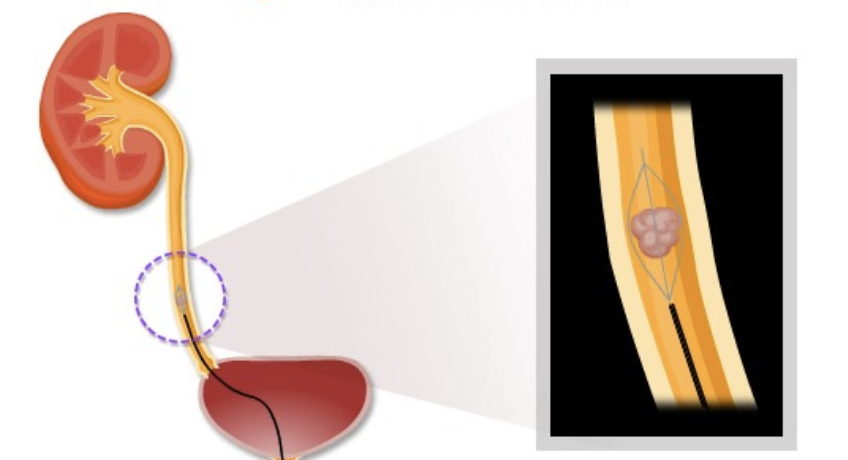

Kidney stones How to Diagnose Kidney stones and Get Rid of Kidney stones

Kidney stones
Kidney stones are disorders in which the substances in the urine form crystals and deposits, forming stones and forming in the kidneys, causing various symptoms and complications.
These stones are made in the kidneys and move along the ureters. When they are small, they pass out of our bodies through urine, but when they are large, many stones in the urinary system, such as the kidneys, ureters, bladder, and urethra, Can cause problems.
Kidney stones can irritate and injure surrounding tissues and cause very severe hematuria. If large enough to block the flow of urine, urine does not drain from one kidney, resulting in swelling and severe pain in the side. It also reduces the function of the kidneys. In addition, as the stones pass, they can easily cause infections of the urinary system, causing symptoms of urinary tract infections such as fever and cloudy urine.
Pain from kidney stones can occur suddenly and cause extreme pain, which can frighten many people, but in most cases, life-threatening problems can be resolved on their own or resolved with simple treatment. Almost no
If kidney stones recur frequently, it is necessary to identify the risk factors that cause them for some reason. In other words, if the concentration of certain substances rises or is insufficient, kidney stones may occur, so if the patient's stones come out in the urine, it is necessary to analyze what components are present. This analysis is very important because it allows for accurate prevention. Even if the exact cause is not known, drinking enough water and adjusting your diet can reduce the frequency of occurrence.
Causes and Risks
1. The process of development of kidney stones
The kidneys are two bean-sized fist-sized organs, one on each side of the lower back spine. The main function of the kidneys is to mix and discharge water, various electrolytes and metallic minerals, toxins, etc. from our bodies into the urine.
In most cases, kidney stones are not a single factor, but a combination of factors.
Kidney stones occur when the balance of these various components in the urine is broken. Kidney stones can also occur if urine is low and there are ingredients in the urine that can make crystals of various substances. Kidney stones can also occur if your urine is overly acidic or alkaline, and can also occur when your body does not properly absorb the special components in your urine.
There are many substances that make up kidney stones. Kidney stones are easily formed when the concentration of calcium, oxalate , and uric acid increases in the urine, depending on the infection, food, drug, or body condition . The composition of the stones depends on these factors, and the most common kidney stones are kidney stones that contain calcium. Knowing the components of kidney stones can also help determine the cause of kidney stones.
2. Types of Kidney Stones According to Ingredients
Analyzing kidney stones released by the body reveals the composition of the stones. Kidney stones are classified according to their composition as follows.
- calcium stones
80% of kidney stones are made up of calcium, which is chemically calcium oxalate . Fish is present in some fruits and vegetables, but most of the fish in our bodies comes from metabolism in the liver. Certain foods, high intakes of vitamin D, surgery in some intestines, and various metabolic disorders increase calcium and oxalate levels in the urine, forming calcium stones.
- struvite ( Struvite ) absent
These stones are common in women, and most are caused by a urinary tract infection. These stones can grow large enough to fill the space where urine collects on one kidney, and in this case, they can be shaped like antlers along the shape of a python.
- uric acid stones
This stone is formed by uric acid and is a byproduct of protein metabolism in our bodies. If you continue to eat high protein, you may have uric acid stones. It can also occur in patients with gout, and if there are genetic factors or metabolic disorders, it can be caused by uric acid in the urine as the uric acid in the blood increases.
- cystine stones
A relatively rare type of kidney stone that occurs in people with a condition in which a specific amino acid (cystine) is genetically released through the kidneys.
- Risk Factors for Kidney Stones
The following factors are known to increase the risk of kidney stones.
- lack of moisture
If you don't drink enough water, your urine will concentrate, resulting in an increase in the concentration of many substances that can make kidney stones, which can lead to kidney stones. Especially if you sweat a lot during the hot season and lose a lot of water, kidney stones may occur if you do not replenish the water properly.
- family or individual medical history
If someone in your family has or has had kidney stones, they are more likely to have kidney stones than people who do not have them. And people who have had a history of kidney stones are more likely to have stones again than people who do not.
- age and gender
Most kidney stones occur between the ages of 20 and 70, and men are more prone to kidney stones than women.
- Dietary
Protein-rich, salty and low-calcium foods increase the likelihood of kidney stones.
- lack of exercise
Kidney stones can easily occur if you live in bed or just sit in a chair at work. This lack of exercise can lead to the release of calcium from the bones, causing them to accumulate in the kidneys, leading to partial kidney stones.
- obesity
People with high body mass index, high waist circumference, and being overweight have a high frequency of kidney stones in the long run. This is more pronounced for women.
- high blood pressure
The incidence of kidney stones in people with high blood pressure is about twice that of people with normal blood pressure.
- People who have undergone gastric bypass surgery, patients with inflammatory bowel disease or chronic diarrhea
Gastric bypass surgery is a person who has a stomach and small intestine directly connected to the stomach, such as a stomach ulcer or cancer. People who have these surgeries, those with inflammatory bowel disease, and those with chronic diarrhea can change kidney absorption by changing the absorption of calcium in food and increasing the concentration of substances in the stones.
Symptoms and Complications
- Symptoms of Kidney Stones
Symptoms associated with kidney stones can vary depending on the size of the stone, the location of the stone, and the presence of an infection.
Common symptoms of kidney stones include:
- Pain in the back or side: A sudden, very severe pain that many people feel is one of the worst pains in their life. The pain may worsen and then improve and may last for 20 to 60 minutes once occurring.
- hematuria: Some people see urine that contains clear blood that can be clearly seen by their eyes, but a small amount of blood that is invisible to the eye and can be seen under a microscope is mixed with urine.
- Urinary tract: A smell or turbid color of urine comes out of the eye.
- Nausea and vomiting: Can occur if kidney stones affect the digestive system.
- Fever and chills: May occur when inflammation is caused by kidney stones.
- Frequent urination : Frequent urination symptoms.
- Urination : It is difficult to hold urine as soon as urine comes out.
- dysuria: The symptoms are pain when you urinate occurs.
Although one or more of these symptoms may appear, a combination of symptoms usually occurs. On the other hand, some patients rarely feel any symptoms, and they may find kidney stones by accident during a physical exam or other tests to diagnose other illnesses.
- Complications of Kidney Stones
If kidney stones remain in one kidney, they grow very large or cause infection. However, they may not cause any other symptoms or complications unless they block the flow of urine.
If a stone is caught in any of the urine's pathways and blocks the flow of urine, stagnant urine can cause increased pressure, which can cause pain, damage the kidneys, and cause bleeding and infection.
Diagnosis
In general, the diagnosis of kidney stones may require the following tests:
1. Listen to troops
To identify risk factors for kidney stones. Severe, sudden onset of age, sex, eating habits, drinking water frequently, whether you have kidney stones in your family, whether you have had kidney stones before, and whether the pain you complain is in your lower back or side Check for pain.
2. Physical examination
Identify the area that complains of pain, especially if you are knocking on one side of your lower back.
3. Blood test
Your blood may be checked for high concentrations of substances that cause kidney stones, such as uric acid, and if necessary, special tests may be done to check your minerals and amino acids. You can also check whether kidney failure is caused by kidney stones and whether white blood cells are elevated due to inflammation.
4. Urine test
Check the color and smell of the urine, and make sure that red blood cells, which should not normally be present under the microscope, are not mixed with urine, even if the visible blood is not mixed.
5. Imaging Medical Examination
Test
Test

Test

- abdominal radiography
X-rays of the abdomen can reveal stones in most kidneys and reveal the location and size of kidney stones. However, stones that are made up of some specific components (uric acid) may transmit radiation and may not be detected by radiography.
Kidney stones found on abdominal radiography 2) abdominal ultrasound
Radiofrequency examinations have the advantages of no pain, no safety, and no exposure to radiation. However, it is easy to miss small stones in the ureters or bladder.
- Abdominal computed tomography ( CT )
This test is very helpful in finding kidney stones in the acute phase and urinary stones. Even small stones can be found, and the location and size of all stones above a certain size can be determined by the resolution of the shooting machine, regardless of the composition.
CT Findings of Kidney Stones 3) Urinary Angiography
This test involves taking a drug called a contrast agent, which can appear white on a radiograph through a vein, and then the radiation is filtered through the kidneys and passed through the ureter, bladder, and urinary tract. Urinary angiography is a very useful test to determine the location of kidney stones, and if the stones block the flow of urine, it can help to determine the urinary system. Recently, computed tomography ( CT ) replaces this test in many cases.
Urinary tract imaging
Precautions when Performing Urinary Imaging
Contrast agent is an iodine injection containing iodine, which does not easily pass through x- rays. The contrast agent is then excreted along the ureter through the kidneys, resulting in empty spaces on the X- ray image of stones present inside the ureter.
Contrast agents, on the other hand, can be used to more clearly distinguish abnormal areas in organs, such as cancer, in tests such as CT .
However, contrast agents may rarely cause side effects, especially in people with allergies, asthma and severe illnesses such as heart disease, and those with past drug side effects. In most cases, the side effects of injections of the contrast agent are mild, including nausea, hives, itching, spots or redness of the face, coughing, hoarseness, runny nose, and shortness of breath.
However, just as rarely as a bee-killed person dies from a severe allergic reaction, one in every 30,000 or 100,000 people who have received a contrast agent has reported a very serious form of allergic reaction.
In order to prevent such risks, prior to conducting a test that injects contrast agents, the patient's past history is to determine whether there is a history of contrast agent side effects or risk factors for contrast agent side effects.
cure
- Early Pain Treatment
In many cases, small kidney stones (typically less than 5 mm ) are excreted in the urine by themselves, so there is often no treatment other than pain control. However, pain from urinary tract stones is so severe and intense that an appropriate analgesic agent is needed, and sometimes an antispasmodic medication that relaxes the urinary tract contractions.
- Treatment to excrete in urine
For small stones, infusion of fluid or drinking plenty of water may help to induce natural excretion into the urine.
- Extracorporeal Shock Wave Lithotomy ( ESWL )
This procedure is a common method for kidney or urinary stones.
Extracorporeal shock wave lithotripsy can be used in stones where natural discharge is considered difficult, especially stones of some size. In this method, before the procedure, the location of the stones is determined by the imaging method. Then, an ultrasonic shock wave is applied to the stones to break the stones into small pieces and then discharge them naturally.
Extracorporeal shockwave lithotripsy
This procedure may be done after a simple anesthesia, and it may sound quite loud when a shock wave is applied, but it is rarely dangerous for the patient.
Complications from this procedure can be temporary bloody urine and temporary bleeding of the kidneys or surrounding tissue. Also, if the stones are not completely crushed, it may be necessary to repeat the procedure several times or remove the remaining stones by urinary endoscopic examination.
After the procedure, stones may be excreted over a few weeks, depending on the patient.
If extracorporeal shock wave lithotripsy is not successful or the size of the stone is large, urological surgery is used to make a small incision in the patient's back and remove the stone using a device called a nephroscope.
Percutaneous Stone Removal 5. Stone removal using ureteroscope
This procedure is a method to remove stones that do not drain from the ureters. Use a small endoscope to enter the bladder, then remove the stone by using an instrument mounted on the endoscope. In recent years, the endoscope can be equipped with ultrasound or a laser to break up and remove some stones.
Stone Removal Using Urinary Endoscopy 6. Medical Medication
If the substance that makes up the stone can be dissolved by the drug, you can try to dissolve the stone by dispensing the appropriate drug and drain it into the urine.
prevention
To prevent the development of kidney stones, lifestyle modifications and medications can be taken to prevent the formation of stones.
- Lifestyle correction
- much water intake
Drinking lots of fluids, and therefore urinating too much, prevents the formation of stones and makes them easier to urinate. To do this, it is recommended that you drink at least 2 to 3 liters of water and at least 2 liters of urine a day. However, if it is difficult to measure the correct amount, it is better to drink enough water to urinate so that the color is almost colorless when you urinate. This is because thick urine means that you have not consumed enough fluid in concentrated urine.
- Good drinks to prevent kidney stones
Water is best for rehydration. Other than that, it is best to drink a glass of lemonade (although this is not a common drink in our country). If lemonade is difficult to obtain, lemon juice or orange juice has a similar effect. Drinking these juices is known to increase citrate in our body, which is known to prevent the formation of stones.
- Avoiding Foods That Cause Kidney Stones
The most common foods that cause calcium stones are oxalic acid-rich foods that combine with calcium to form stones. Avoid these foods as much as possible to avoid kidney stones. These foods include rhubarb, kale, beans, spinach, sweet potatoes, almonds, and sesame seeds. These foods are generally known to be good for health, and they are supplied in the form of green juice. If you have a family member with kidney stones or have had kidney stones, you should consider them well.
- Increase your calcium intake
In fact, eating a lot of calcium-rich food does not mean you have more calcium stones. Conversely, eating calcium-rich foods helps prevent kidney stones because this calcium is excreted in the stool in combination with the fishery that makes stones in your intestines. Therefore, calcium intake should be actively recommended to prevent kidney stones. The exception is that too much calcium absorption in the gastrointestinal tract can cause kidney stones, so avoid excessive intake.
- Prevention using drugs
When the kidney stones are analyzed and the components of the stones are identified, they can be prescribed to prevent the recurrence. For example, to prevent calcium stones, you can try to prevent them by choosing one of the diuretics. The choice of such drugs requires the judgment of a specialist.